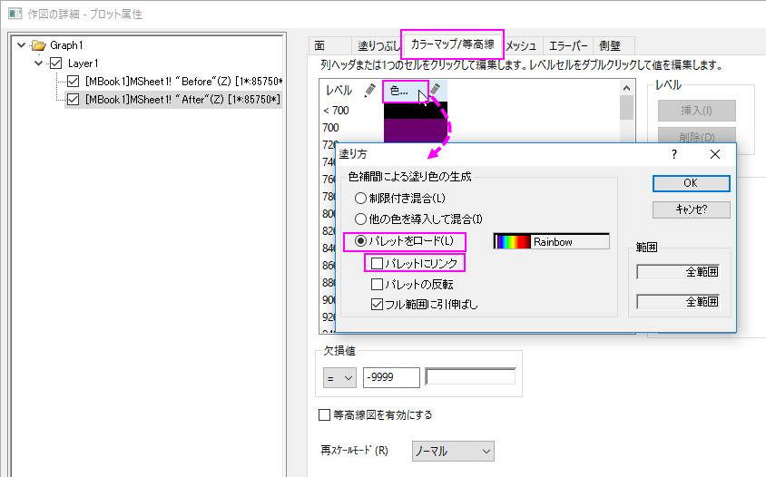

FAQ-832 3Dカラーマップ曲面で指定色を変更するには？
how_to_change_the_specify_cplor_in_the_3D_color_map_surface
最終更新日: 2016/6/28
3Dカラーマップ曲面の指定色を変更する方法は、次の通りです。
- 3Dカラーマップ曲面をダブルクリックして作図の詳細ダイアログを開きます。カラーマップ/等高線タブで、
- 色ヘッダをクリックして塗り方ダイアログを開き、パレットをロードを選択します。
- パレットにリンクのボックスのチェックを外します。
- 
| Note:このチェックボックスにチェックを入れて、選択したパレットに塗り方をリンクさせると、クリックして色列の下にある単一色を変更できなくなります。 |
- OKボタンをクリックして作図の詳細ダイアログに戻り、色列にある単一色のどれかをクリックすると、ポップアップダイアログで色を変更することができます。
キーワード:3Dカラーマップ曲面、カラーマップ、塗り方